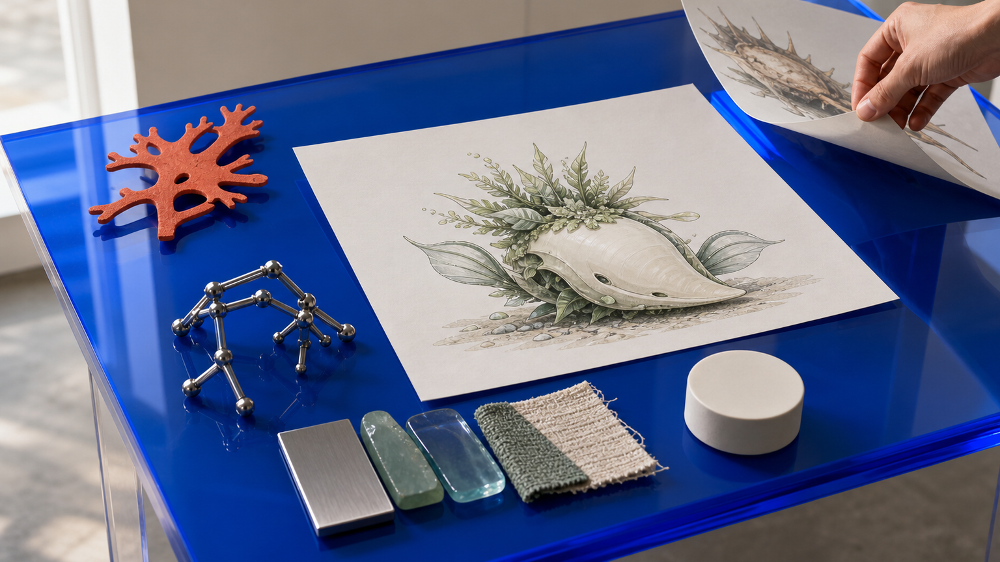
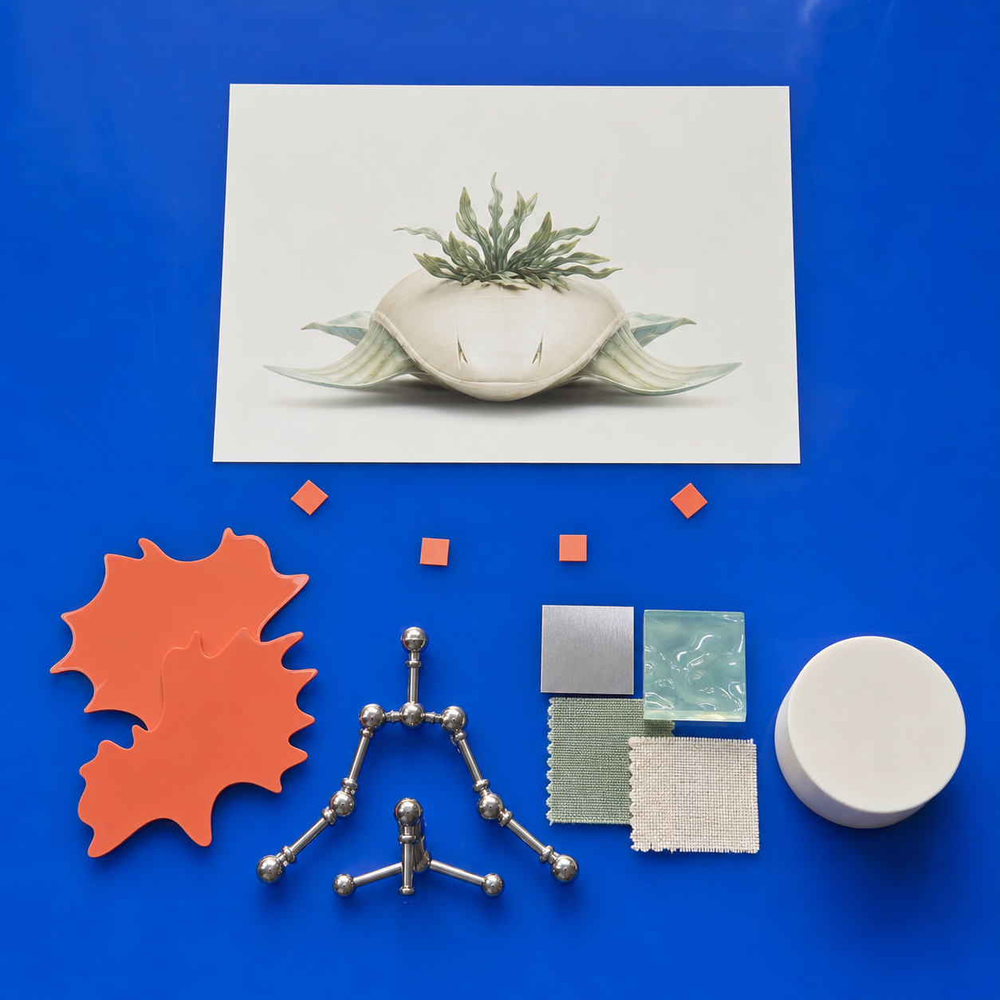
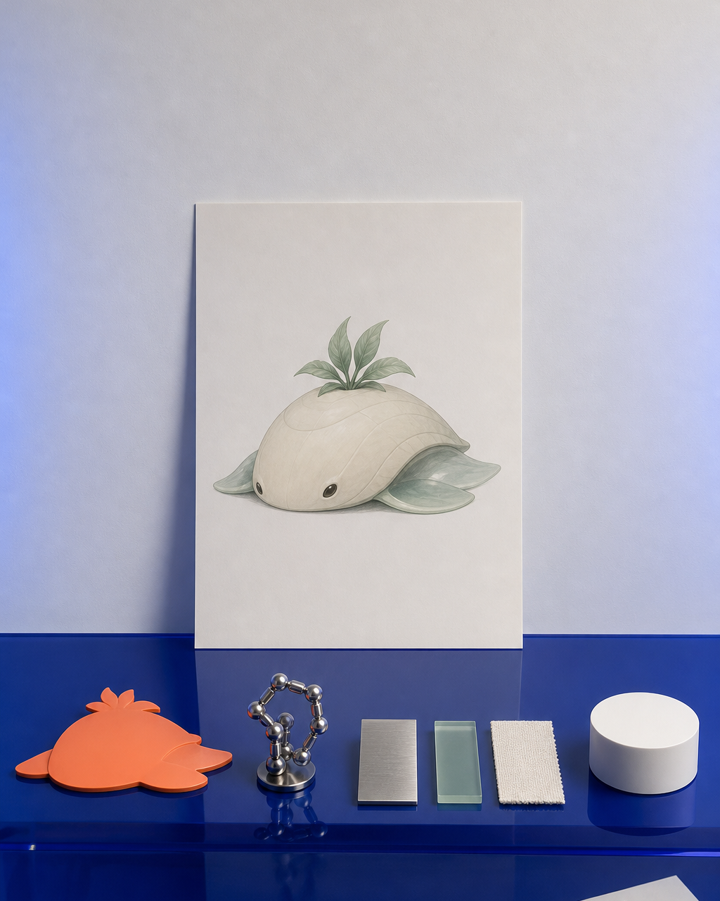

没有成熟 IP，怎样从关键词做出第一版主视觉
只有一个故事片段和几个关键词时，开始并不困难，困难的是怎样让下一张图仍然属于同一个项目。 “治愈、神秘、未来感、自然”都可以引出很多画面，但它们没有说明主体长什么样、以什么姿态出现、表面是什么材料，也没有回答它最终准备成为桌面摆件、浮雕还是局部样。直接把这些词交给生成工具，常见结果是每张图都好看，轮廓、比例和材质却不断变化，无法选出可继续发展的方向。

具体问题
只有故事片段和“治愈、神秘、未来感、自然”等关键词时，真正缺少的不是更多形容词，而是可以被看见和比较的约束：主体是谁、轮廓如何识别、以什么姿态出现、表面是什么材质，以及这张图最终要服务于摆件、浮雕还是局部样。
如果这些信息没有先锁定，生成出来的每张图都可能单独好看，却会在头身比例、肢体结构、配件位置和材质语言上持续变化。这样既无法判断哪一张应当成为主视觉，也无法为后续三维初模提供稳定输入。
核心判断
第一版主视觉的任务不是一次定稿，而是建立一个可以继续验证的共同基准。关键词必须被改写成“用途—主体—动作—结构—材质与配色—排除项”六类可见条件。
判断一张候选图是否可继续，不只看氛围是否漂亮，还要看主体轮廓能否被稳定复现、关键结构是否说得清、材质和颜色能否延续，以及它是否为后续尺寸、拆件、打印和展示预留了判断空间。
步骤或标准
- 先定用途：明确第一版主视觉准备服务于桌面摆件、浮雕、局部样、网页展示还是课程范围判断。用途不同，构图、比例与细节密度也不同。
- 让关键词落位：把抽象词分别落到轮廓、姿态、结构、材质、配色和场景关系中，例如“自然”具体表现在哪一种表面、连接或生长结构上。
- 锁定不可漂移项：固定主体比例、识别轮廓、主要配件、核心材质和主辅色；同时列出不能出现的风格、结构和多余元素。
- 比较少量候选：用同一套标准比较候选方向，不同时改动主体、姿态、材质和用途。优先选择最容易继续说明和验证的一张，而不是细节最多的一张。
- 保留三档出口：形成主方案、备选方案和降级方案；当时间、设备或结构复杂度超出五天范围时，可以缩小尺寸、减少配件或先做局部样。
常见错误
- 只堆“高级、未来、治愈”等抽象词，却不说明这些词落在哪个可见部位，导致每次生成都换一种角色和材质。
- 一次同时推进太多候选，并在每轮一起更换姿态、构图和配色，最后无法判断到底是哪一个条件起作用。
- 只判断画面是否好看，不检查遮挡、悬空、薄片、重心和连接关系，选中的图进入三维后才发现结构无法成立。
- 把第一版主视觉当成最终商业定稿，过早追求包装、宣传场景和大量细节，反而失去最需要先确认的主体与范围。
与五天课程的关系
这一步对应 Day 1 的方向判断、视觉输入整理与 Gate 1 范围锁定。已有作品的参与者要把原画中的遮挡、背面和材质补清楚；只有想法的参与者则从故事、关键词和参考图中整理出第一套可验证的主视觉方向。
Gate 1 通过后，Day 2 才会把同一套轮廓、比例、材质和主备方案带入三维初模与 Nomad 人工修模，并分别为网页展示用 GLB 和打印用 STL 继续补齐结构。没有稳定主视觉，就不应直接进入三维生成。
事实 / 案例 / 完成度边界
本页四张图片均为课程流程与方向示意，用于解释如何从关键词建立主视觉约束；它们不是往期学员案例，也不代表已经完成的客户项目、课堂成果或量产商品。
关键词整理不能自动生成成熟商业 IP，也不承诺一次生成即定稿。五天课程的目标是完成第一版可继续发展的项目闭环；最终尺寸、精度、样件数量和完成等级仍取决于项目复杂度、设备、材料、打印排程与人工修正情况。
报名入口
课程同时接受两类起点：已经有角色、插画或系列作品，希望进入三维、实体和发布流程；以及只有故事、关键词和参考图，希望先建立第一版可验证原型。提交资料后，课程团队会人工确认项目起点、席位和费用边界。
填写公开报名资料：https://wj.qq.com/s2/27296919/9499/。提交表单不等于名额、付款或项目方案已经最终确认。


课程时间：2026 年 10 月 2 日至 10 月 6 日｜青岛｜每班限 10 人
填写报名资料 →